Ontwikkeling van een chatbot architectuur
van idee tot deployment

#### Table of contents 1. Why 1. Soft Naert 2. General 2. How 1. Theory 2. Overview 3. Client 4. NLU 5. Learning platform 6. Bot server 7. Shop data 3. What
Waarom
Demo
NLU leerplatform
Slide 3